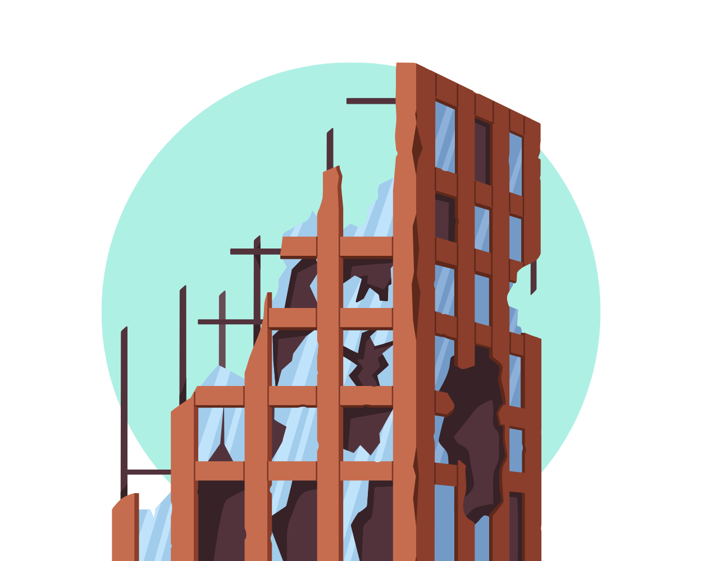
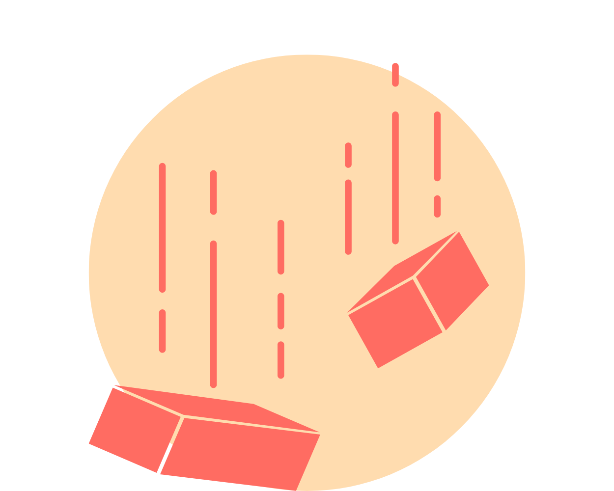
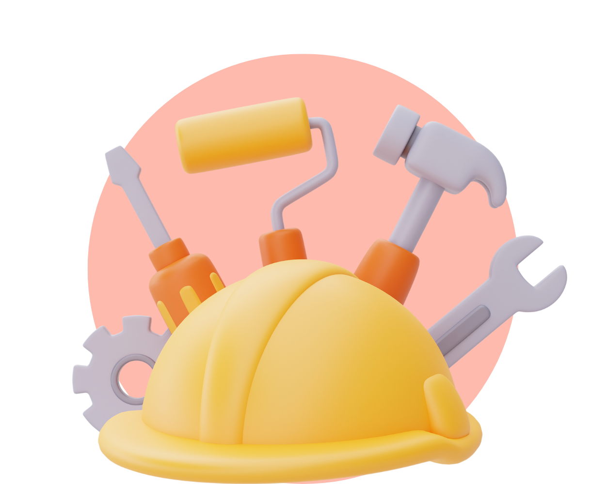
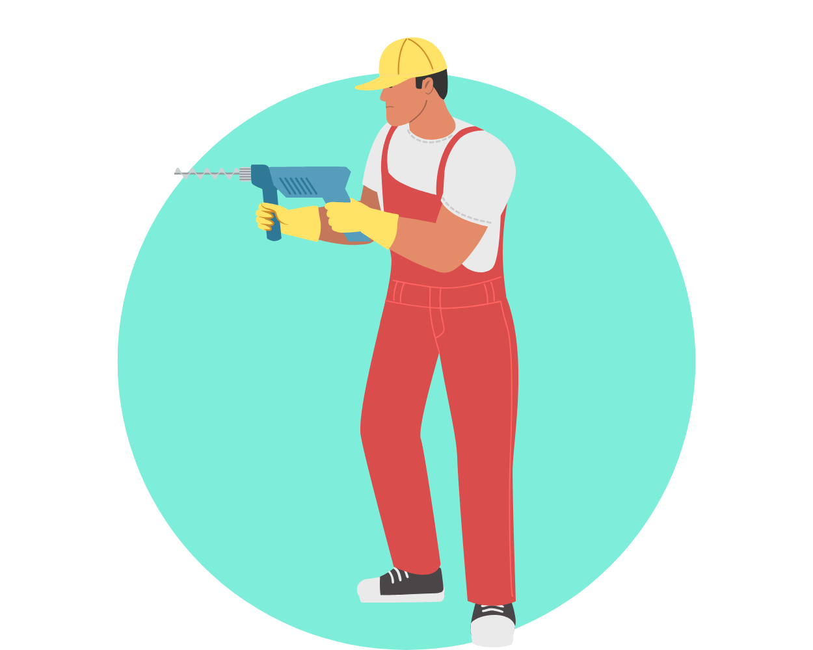
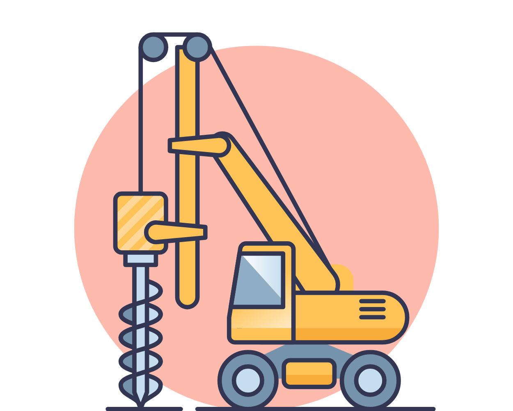

Risk för ras
Vid markarbete och grundläggning finns det risk för ras, särskilt om säkerhetsåtgärder
inte vidtas. Tunga utrustningar, som kranar, kan också välta och orsaka olyckor.
Fysiska arbetsmiljörisker fortsättning
Klicka på de olika gröna knapparna nedan för att läsa mer om olika arbetsmiljörisker:


Fallande föremål
Områden där det finns risk för fallande föremål ska spärras av och tydligt markeras.
Skyddstak, täckta gångar eller liknande ska användas om det är nödvändigt att beträda dessa områden.

Maskiner och utrustning
Maskiner är ofta inblandade i arbetsplatsolyckor. Olyckor kan inträffa när:
- Maskinskydd tas bort
- Maskiner används felaktigt
- Bristande kunskap eller utbildning förekommer
- Maskinen inte har besiktigats eller underhållits korrekt

Handhållna maskiner
Sågar, borrmaskiner och andra handverktyg kan orsaka allvarliga skador, särskilt på
händer och ben på grund av hög vibrationsexponering under en längre tid. Material som flyger
iväg vid användning kan också träffa och skada andra. Användning av skyddsutrustning, som
skyddsglasögon och hörselskydd, är ofta nödvändig.

Entreprenadmaskiner
Grävmaskiner, lyftkranar och truckar är exempel på entreprenadmaskiner där risker inkluderar
förlorad kontroll över maskinen, såsom:
- Klämskador
- Vältolyckor
- Det saknas kunskap om maskinen
- Maskinen används felaktigt
- Maskinen är inte besiktigad
- Maskinen har inte kontrollerats och underhållits
- Maskinskydd tas bort eller skyddsutrustning inte används.
Åtgärder:
- Dokumenterad utbildning för förare
- Arbetsgivarens skriftliga tillstånd för användning av vissa maskiner
- Regelbundna kontroller och underhåll